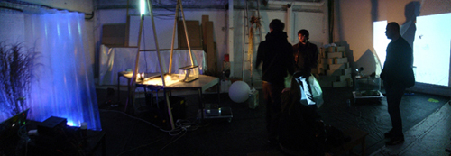
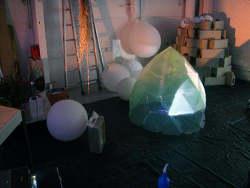
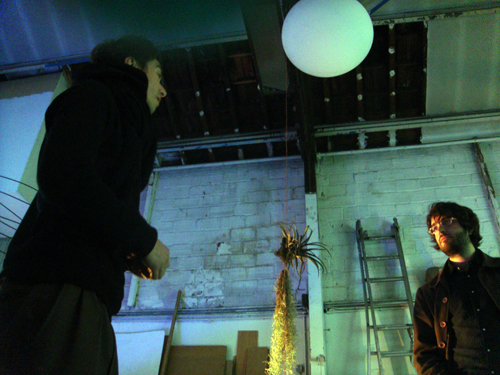
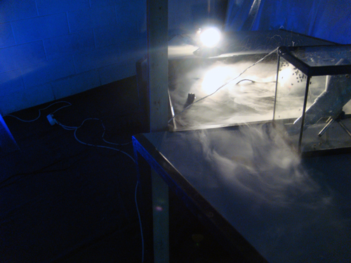
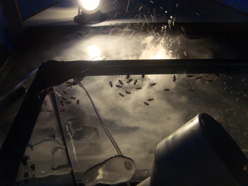
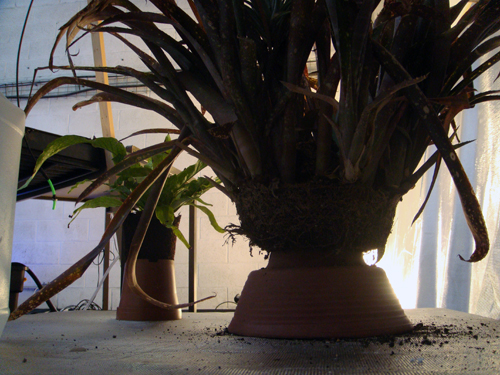
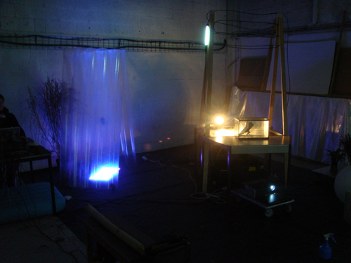
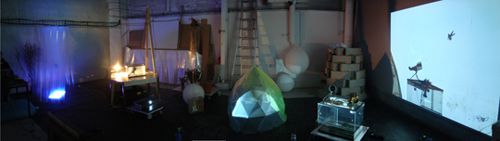

7 artistes invités tissent sur la base du vivant, des axes de rencontre ou de superposition. Autour d'une matière première commune, ils génèrent des modules qui s'articulent comme un seul espace.
Chaque pôle d'activité se perçoit comme le rouage d'un ensemble dont l'organologie prend forme à mesure que la machine et l'installation est rendue chque fois autonome.
A un moment X du temps de travail, l'atelier existe indépendement des artistes, ceux-ci représentant alors l'excroissance modulaire du vaisseau en activité.
«Laabhelium Garden» est une installation performée dans le temps par l'évènement des voie(s) de ses membres et de la voix des actes et des processus qui en rythme son élaboration. Les diverses parties du jardin sont tout autant de territoires fragmentaires et mobiles, rassemblés ou disséminés, autonomes ou liées dans le temps. Ce jardin épiphyte est déterminé par le vivant et les histoires qui s'y installent. L'installation se présente comme un jardin modulaire, dont les différentes parties sont tout autant «d'écosystèmes» et de territoires provisoires. L'installation est constituée d'équilibres de temporalité hétérogène façonnés entre des moments d'événements, d'atelier et de «jachère», là où le repos travaille.
Matériaux:
Plantes épiphytes (orchidées, bromeliaceae, tillandsias, lichen), aquarium, mouches, vidéo-projection, amplis, brouillard à ultra-son, table à marée, bacs en PVC, micro-amplifié, grillons, ballons, hélium, structure auto-portante en plexi, fibre de coco, enseintes, terrarium, bache PVC, serpent en plastique, lampe à LED et réagissant au volume sonore ...
Dimensions: 40m2






